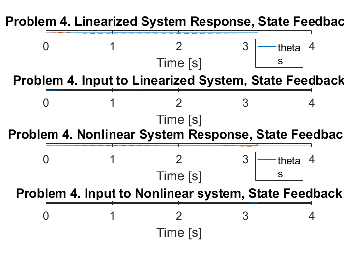
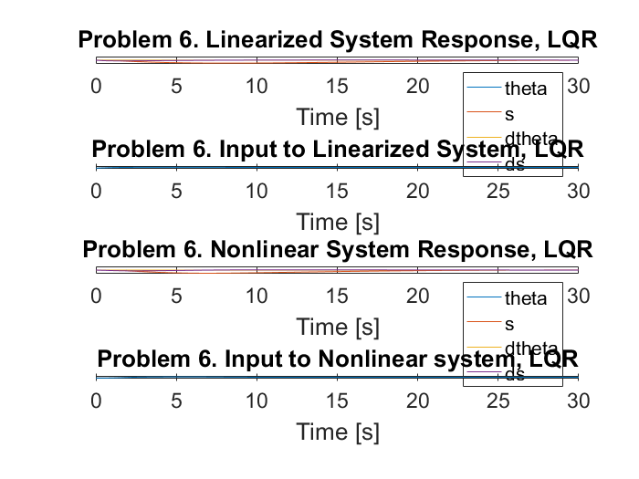

Contents
close all
clear
clc
x10 = 0.5;
x20 = 0;
x30 = 0;
x40 = 0;
t0 = 0;
tf = 10;
Problem 1
load('sym_model_inv_pend_cart.mat');
syms u;
fi = 1;
f = [dtheta;ds;(inv(D)*(-H+[0;u]))];
x = [theta;s;dtheta;ds];
Alin = jacobian(f,x);
Blin = jacobian(f,u);
theta = 0;
s = 0;
dtheta = 0;
ds = 0;
M = 25;
m = 20;
L = 9.81;
g = 9.81;
J = 1/3*m*L^2;
Alin = vpa(subs(Alin),4)
Blin = vpa(subs(Blin),4)
Alin =
[ 0, 0, 1.0, 0]
[ 0, 0, 0, 1.0]
[ 1.125, 0, 0, 0]
[ 4.905, 0, 0, 0]
Blin =
0
0
0.002548
0.03333
Problem 2
A = [0,0,1,0;0,0,0,1;9/8,0,0,0;981/200,0,0,0];
B = [0;0;5/1962;1/30];
Pctrb = [B,A*B,A^2*B,A^3*B];
ranklinsys = rank(Pctrb)
P = [-3,-2,-0.7+0.2*i,-0.7-0.2*i];
K1 = place(A,B,P)
ranklinsys =
4
K1 =
1.0e+03 *
7.4144 -0.1272 8.2927 -0.4420
Problem 3
syms theta s dtheta ds
x = [theta;s;dtheta;ds];
AminusBK = vpa(A - B*K1,4)
fKx = [dtheta;ds;(inv(D)*(-H+[0;-K1*x]))];
M = 25;
m = 20;
L = 9.81;
g = 9.81;
J = 1/3*m*L^2;
fKx = subs(fKx);
fkxlin = jacobian(fKx,x);
theta = 0;
s = 0;
dtheta = 0;
ds = 0;
fkxlin = subs(fkxlin);
linofnonlinsys = vpa(fkxlin,4)
AminusBK =
[ 0, 0, 1.0, 0]
[ 0, 0, 0, 1.0]
[ -17.77, 0.3242, -21.13, 1.126]
[ -242.2, 4.24, -276.4, 14.73]
linofnonlinsys =
[ 0, 0, 1.0, 0]
[ 0, 0, 0, 1.0]
[ -17.77, 0.3242, -21.13, 1.126]
[ -242.2, 4.24, -276.4, 14.73]
Problem 4
clear t x fKx tlin xlin tnl xnl Flin Fnl
x10 = 0.7;
x20 = 0;
x30 = 0;
x40 = 0;
t0 = 0;
tf = 3.2;
linsyseval = @(t,x)[(A-B*K1)*x];
[tlin,xlin] = ode45(linsyseval, [t0 tf], [x10,x20,x30,x40]);
figure(1)
subplot(4,1,1)
plot(tlin,xlin(:,1),'-',tlin,xlin(:,2),'--')
legend('theta', 's','location', 'southeast')
title('Problem 4. Linearized System Response, State Feedback')
xlabel('Time [s]')
ylabel('States')
hold on
for i = 1:length(xlin)
Flin(i) = -K1*xlin(i,:)';
end
subplot(4,1,2)
plot(tlin,Flin)
xlabel('Time [s]')
ylabel('Force [N]')
title('Problem 4. Input to Linearized System, State Feedback')
hold on
[tnl,xnl] = ode45(@nonlinsyseval, [t0 tf], [x10,x20,x30,x40],[],D,H,K1);
for i = 1:length(xnl)
Fnl(i) = -K1*xnl(i,:)';
end
subplot(4,1,3)
plot(tnl,xnl(:,1),'-',tnl,xnl(:,2),'--')
legend('theta', 's','location', 'southeast')
title('Problem 4. Nonlinear System Response, State Feedback')
xlabel('Time [s]')
ylabel('States')
hold on
subplot(4,1,4)
plot(tnl,Fnl)
xlabel('Time [s]')
ylabel('Force [N]')
title('Problem 4. Input to Nonlinear system, State Feedback')
hold on

Problem 5
clear t x fKx tlin xlin tnl xnl Flin Fnl
Problem 6
x10 = 1.1;
x20 = 0;
x30 = 0;
x40 = 0;
t0 = 0;
tf = 30;
w1 = 10;
w2 = 10;
w3 = 1;
w4 = 1;
Q = [w1,0,0,0;0,w2,0,0;0,0,w3,0;0,0,0,w4]
R = 10
[K3,S,E] = lqr(A,B,Q,R);
[vlin,dlin] = eig(A-K3*B)
linsyseval = @(t,x)[(A-B*K3)*x];
[tlin,xlin] = ode45(linsyseval, [t0 tf], [x10,x20,x30,x40]);
figure(2)
subplot(4,1,1)
plot(tlin,xlin)
legend('theta', 's', 'dtheta', 'ds', 'location', 'southeast')
title('Problem 6. Linearized System Response, LQR')
xlabel('Time [s]')
ylabel('States')
for i = 1:length(xlin)
Flin(i) = -K3*xlin(i,:)';
end
subplot(4,1,2)
plot(tlin,Flin)
xlabel('Time [s]')
ylabel('Force [N]')
title('Problem 6. Input to Linearized System, LQR')
clear tnl F
[tnl,xnl] = ode45(@nonlinsyseval, [t0 tf], [x10,x20,x30,x40],[],D,H,K3);
for i = 1:length(xnl)
Fnl(i) = -K3*xnl(i,:)';
end
subplot(4,1,3)
plot(tnl,xnl)
legend('theta', 's', 'dtheta', 'ds', 'location', 'southeast')
title('Problem 6. Nonlinear System Response, LQR')
xlabel('Time [s]')
ylabel('States')
subplot(4,1,4)
plot(tnl,Fnl)
xlabel('Time [s]')
ylabel('Force [N]')
title('Problem 6. Input to Nonlinear system, LQR')
Q =
10 0 0 0
0 10 0 0
0 0 1 0
0 0 0 1
R =
10
vlin =
-0.5490 + 0.0000i 0.1592 + 0.0000i -0.0464 + 0.2122i -0.0464 - 0.2122i
-0.5889 + 0.0000i 0.6866 + 0.0000i -0.5704 - 0.2761i -0.5704 + 0.2761i
-0.5379 + 0.0000i -0.1334 + 0.0000i -0.0262 + 0.2286i -0.0262 - 0.2286i
-0.2499 + 0.0000i -0.6967 + 0.0000i 0.7058 + 0.0000i 0.7058 + 0.0000i
dlin =
-7.2045 + 0.0000i 0.0000 + 0.0000i 0.0000 + 0.0000i 0.0000 + 0.0000i
0.0000 + 0.0000i -1.0680 + 0.0000i 0.0000 + 0.0000i 0.0000 + 0.0000i
0.0000 + 0.0000i 0.0000 + 0.0000i -0.5300 + 0.9302i 0.0000 + 0.0000i
0.0000 + 0.0000i 0.0000 + 0.0000i 0.0000 + 0.0000i -0.5300 - 0.9302i
